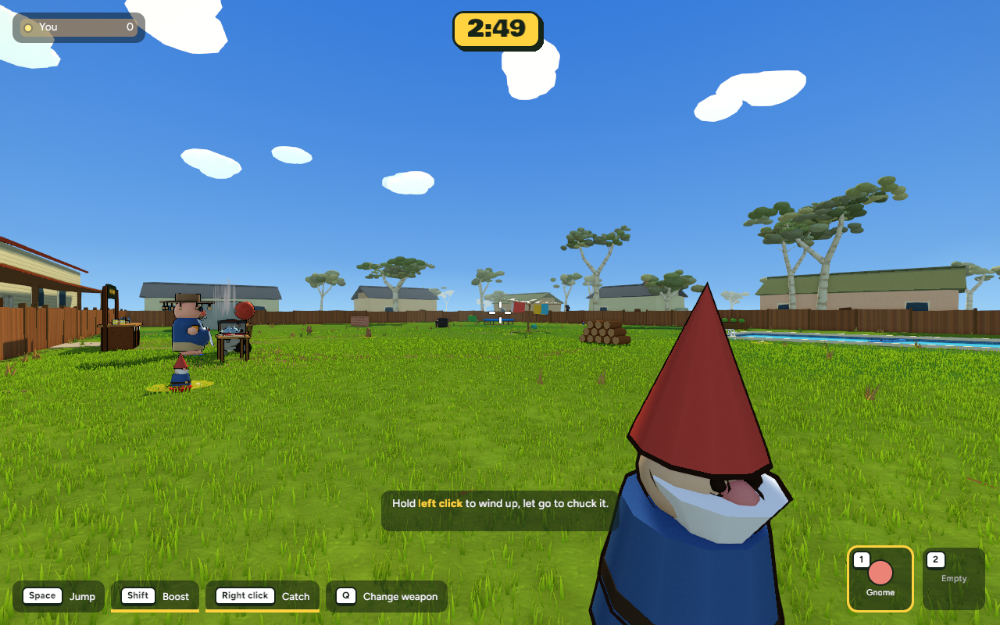
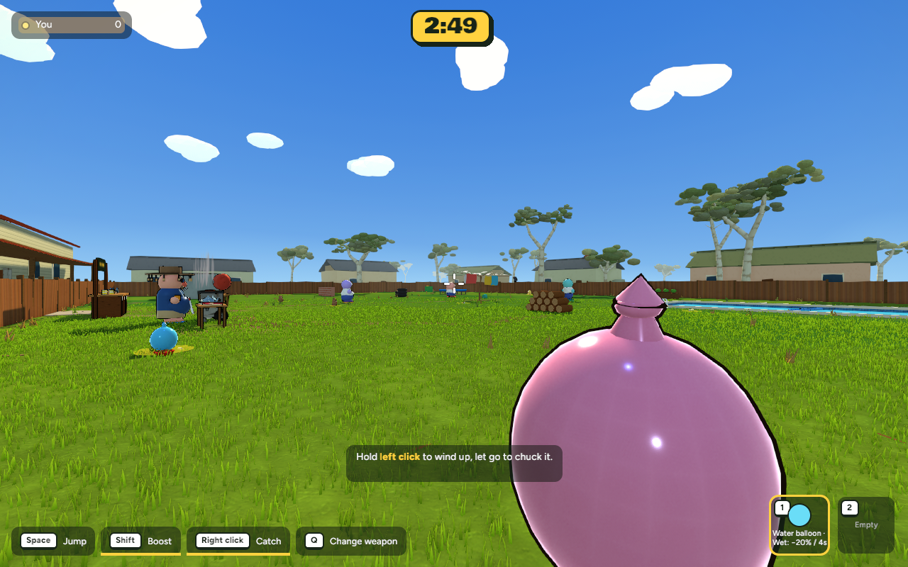
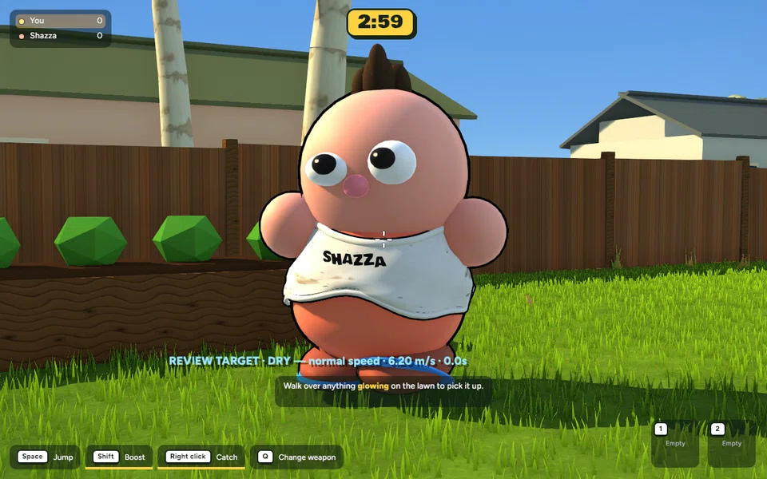
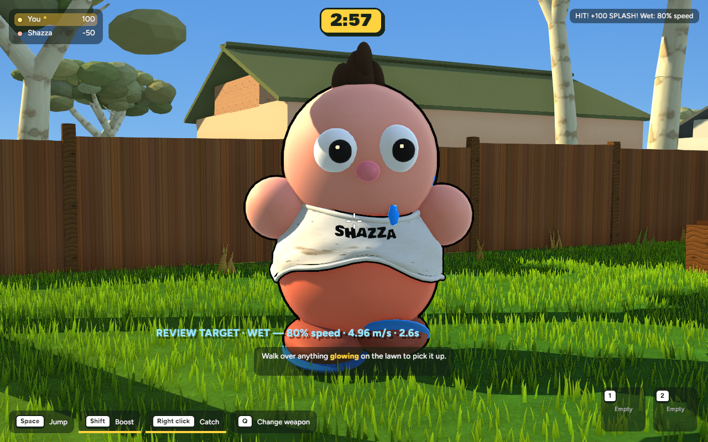
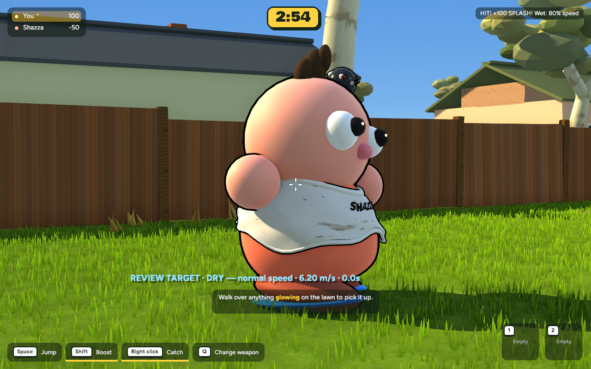
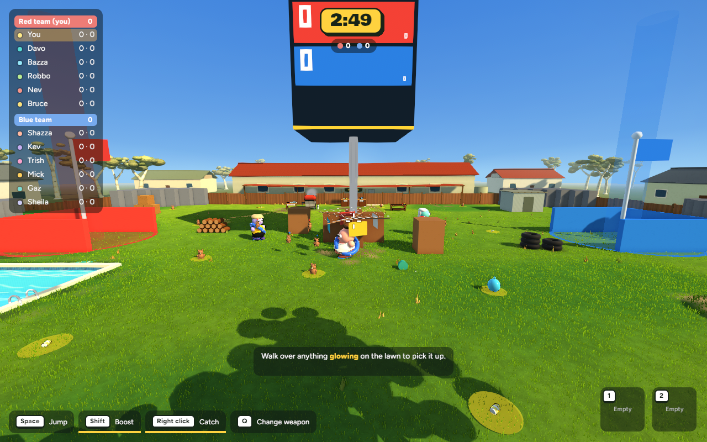
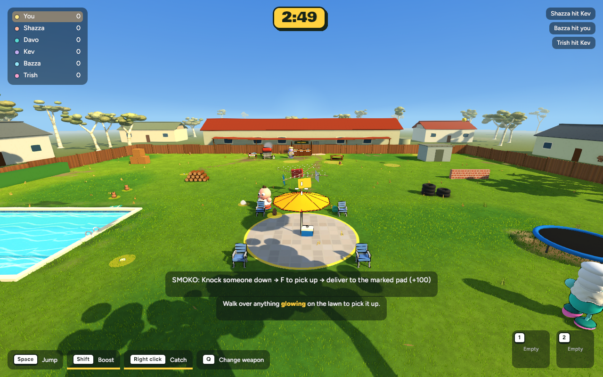
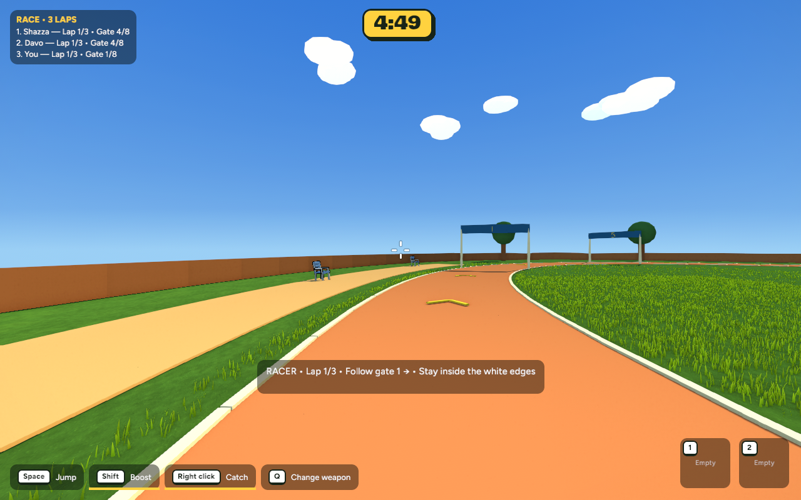

IMPLEMENTED GAME CAPTURES · 17 OCTOBER 2026 · AWAITING REVIEW
Water balloons
Throwable gnomes become colourful tied water balloons. A hit bursts the balloon, splashes the victim and leaves falling droplets for four seconds. Walking and sprinting use 80% of their normal speed; a fresh hit refreshes the timer without adding another slowdown.
Checkpoint, rules and verification · Verified rollback · Tests · Release build
Pickup, held item and inventory

Before: original throwable gnome, captured from the saved executable.
After: water balloon and wet-effect description, captured from the new release.Hit → wet → dry

Actual game replay with scripted walking and a real projectile collision. The review readout shows the target’s live movement speed and wet timer. Camera follows the target; no status or speed is fabricated for the capture.Motion verification details are recorded in the checkpoint and raw replay log.

Wet: water droplets preserve face and team-colour readability.
Recovered: droplets disappear and normal speed returns.Existing modes

Heist: existing arena and objectives remain.
Smoko: existing delivery mode and extended knockdown window remain.
Race foundation: the oval circuit remains. Sideline combat and upgrades are still a separate unfinished milestone.Performance and checks
Online wet state and scoring are host-owned. Protocol 10 requires everyone to use this build. Headless host/guest wire tests cover wet replication and recovery; a live two-computer network playtest is still recommended. Existing Race/Heist online restrictions are unchanged.
Test or revert
Run from /Users/marcus/Claude/australian-bbq/rust: ~/.cargo/bin/cargo run -p bbq_app --release -- --give balloon.
The selective rollback preserves the earlier grass, lighting, Race and Smoko work. First run python3 checkpoints/2026-10-17-water-balloons/revert.py from the repository root; add --apply only to revert, then rebuild. It refuses to overwrite later source edits.
No commit or push has been made.